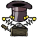
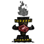
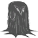
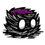
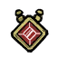

<div class="mw-content-ltr" dir="ltr" id="mw-content-text" lang="en"><figure class="article-thumb tright" style="width: 92px"> <a class="image" href="File:Icon_Magic.png.html"></a> <figcaption> <p class="caption">Tab Icon</p> </figcaption> </figure>
<table class="cquote" style="margin:auto; padding-top:10px;">
<tr>
<td style="vertical-align: top; width:20px; font-size:36px; font-family:'Times New Roman', serif; font-weight:bold; text-align:left; padding:0px;"> “
</td><td style="vertical-align: top; padding:0px; font-size:16px; font-family:'Segoe Print'"> There must be science hiding somewhere in there.
</td><td style="vertical-align: bottom; width:20px; font-size:36px; font-family:'Times New Roman', serif; font-weight:bold; text-align:right; padding:0px;"> ”
</td></tr>
<tr>
<td colspan="3" style="padding-top:0px;"> <p style="font-size:12px; text-align:right; font-family:'Segoe Print'"><cite style="font-style:normal;">–Wilson</cite></p>
</td></tr></table>The <a href="Prestihatitator.html" title="Prestihatitator">Prestihatitator</a> is prototyped from the <a href="Science_Machine.html" title="Science Machine">Science Machine</a>. The <a href="Meat_Effigy.html" title="Meat Effigy">Meat Effigy</a>, <a href="Pan_Flute.html" title="Pan Flute">Pan Flute</a>, <a href="One-man_Band.html" title="One-man Band">One-man Band</a>, <a href="Night_Light.html" title="Night Light">Night Light</a>, <a href="Life_Giving_Amulet.html" title="Life Giving Amulet">Life Giving Amulet</a>, <a href="Chilled_Amulet.html" title="Chilled Amulet">Chilled Amulet</a>, <a href="Ice_Staff.html" title="Ice Staff">Ice Staff</a> and <a href="Shadow_Manipulator.html" title="Shadow Manipulator">Shadow Manipulator</a> are prototyped from the <a href="Prestihatitator.html" title="Prestihatitator">Prestihatitator</a>. Finally, the <a href="Dark_Sword.html" title="Dark Sword">Dark Sword</a>, <a href="Night_Armour.html" title="Night Armour">Night Armour</a>, <a href="Bat_Bat.html" title="Bat Bat">Bat Bat</a>, <a href="Belt_of_Hunger.html" title="Belt of Hunger">Belt of Hunger</a>, <a href="Nightmare_Amulet.html" title="Nightmare Amulet">Nightmare Amulet</a>, <a href="Fire_Staff.html" title="Fire Staff">Fire Staff</a>, <a href="Telelocator_Staff.html" title="Telelocator Staff">Telelocator Staff</a> and the <a href="Telelocator_Focus.html" title="Telelocator Focus">Telelocator Focus</a> are prototyped from the <a href="Shadow_Manipulator.html" title="Shadow Manipulator">Shadow Manipulator</a>. <b>Magic</b> items can be obtained from <a href="Crafting.html" title="Crafting">Crafting</a>, in the Magic tab with the Red Skull icon on the left-hand side.
<div style="clear:both; font-weight: bold"><div class="wikia-gallery wikia-gallery-position-center wikia-gallery-spacing-medium wikia-gallery-border-none wikia-gallery-captions-center wikia-gallery-caption-size-medium" hash="7a6a960758b1a76e21c04baf48fe476b" id="gallery-0"><div class="wikia-gallery-row"><div class="wikia-gallery-item" style="width:74px; "><div class="thumb" style="height:64px;"><div class="gallery-image-wrapper accent" id="Meat_Effigy" style="position: relative; height:64px; width:64px;"><a class="image link-internal" href="Meat_Effigy.html" style="height:64px; width:64px;" title="Meat Effigy (4 KB)"></a></div></div><div class="lightbox-caption" style="width:74px;"><a href="Meat_Effigy.html" title="Meat Effigy">Meat Effigy</a></div></div><div class="wikia-gallery-item" style="width:74px; "><div class="thumb" style="height:64px;"><div class="gallery-image-wrapper accent" id="Prestihatitator" style="position: relative; height:64px; width:64px;"><a class="image link-internal" href="Prestihatitator.html" style="height:64px; width:64px;" title="Prestihatitator (8 KB)"></a></div></div><div class="lightbox-caption" style="width:74px;"><a href="Prestihatitator.html" title="Prestihatitator">Prestihatitator</a></div></div><div class="wikia-gallery-item" style="width:74px; "><div class="thumb" style="height:64px;"><div class="gallery-image-wrapper accent" id="Shadow_Manipulator" style="position: relative; height:64px; width:64px;"><a class="image link-internal" href="Shadow_Manipulator.html" style="height:64px; width:64px;" title="Shadow Manipulator (4 KB)"></a></div></div><div class="lightbox-caption" style="width:74px;"><a href="Shadow_Manipulator.html" title="Shadow Manipulator">Shadow Manipulator</a></div></div><div class="wikia-gallery-item" style="width:74px; "><div class="thumb" style="height:64px;"><div class="gallery-image-wrapper accent" id="Pan_Flute" style="position: relative; height:64px; width:64px;"><a class="image link-internal" href="Pan_Flute.html" style="height:64px; width:64px;" title="Pan Flute (3 KB)"></a></div></div><div class="lightbox-caption" style="width:74px;"><a href="Pan_Flute.html" title="Pan Flute">Pan Flute</a></div></div><div class="wikia-gallery-item" style="width:74px; "><div class="thumb" style="height:64px;"><div class="gallery-image-wrapper accent" id="One-man_Band" style="position: relative; height:64px; width:64px;"><a class="image link-internal" href="One-man_Band.html" style="height:64px; width:64px;" title="One-man Band (5 KB)"></a></div></div><div class="lightbox-caption" style="width:74px;"><a href="One-man_Band.html" title="One-man Band">One-man Band</a></div></div><div class="wikia-gallery-item" style="width:74px; "><div class="thumb" style="height:64px;"><div class="gallery-image-wrapper accent" id="Night_Light" style="position: relative; height:64px; width:64px;"><a class="image link-internal" href="Night_Light.html" style="height:64px; width:64px;" title="Night Light (2 KB)"></a></div></div><div class="lightbox-caption" style="width:74px;"><a href="Night_Light.html" title="Night Light">Night Light</a></div></div></div><div class="wikia-gallery-row"><div class="wikia-gallery-item" style="width:74px; "><div class="thumb" style="height:64px;"><div class="gallery-image-wrapper accent" id="Dark_Sword" style="position: relative; height:64px; width:64px;"><a class="image link-internal" href="Dark_Sword.html" style="height:64px; width:64px;" title="Dark Sword (3 KB)"></a></div></div><div class="lightbox-caption" style="width:74px;"><a href="Dark_Sword.html" title="Dark Sword">Dark Sword</a></div></div><div class="wikia-gallery-item" style="width:74px; "><div class="thumb" style="height:64px;"><div class="gallery-image-wrapper accent" id="Night_Armour" style="position: relative; height:64px; width:64px;"><a class="image link-internal" href="Night_Armour.html" style="height:64px; width:64px;" title="Night Armour (3 KB)"></a></div></div><div class="lightbox-caption" style="width:74px;"><a href="Night_Armour.html" title="Night Armour">Night Armour</a></div></div><div class="wikia-gallery-item" style="width:74px; "><div class="thumb" style="height:64px;"><div class="gallery-image-wrapper accent" id="Bat_Bat" style="position: relative; height:64px; width:64px;"><a class="image link-internal" href="Bat_Bat.html" style="height:64px; width:64px;" title="Bat Bat (3 KB)"></a></div></div><div class="lightbox-caption" style="width:74px;"><a href="Bat_Bat.html" title="Bat Bat">Bat Bat</a></div></div><div class="wikia-gallery-item" style="width:74px; "><div class="thumb" style="height:64px;"><div class="gallery-image-wrapper accent" id="Belt_of_Hunger" style="position: relative; height:64px; width:64px;"><a class="image link-internal" href="Belt_of_Hunger.html" style="height:64px; width:64px;" title="Belt of Hunger (19 KB)"></a></div></div><div class="lightbox-caption" style="width:74px;"><a href="Belt_of_Hunger.html" title="Belt of Hunger">Belt of Hunger</a></div></div><div class="wikia-gallery-item" style="width:74px; "><div class="thumb" style="height:64px;"><div class="gallery-image-wrapper accent" id="Life_Giving_Amulet" style="position: relative; height:64px; width:64px;"><a class="image link-internal" href="Life_Giving_Amulet.html" style="height:64px; width:64px;" title="Life Giving Amulet (4 KB)"></a></div></div><div class="lightbox-caption" style="width:74px;"><a href="Life_Giving_Amulet.html" title="Life Giving Amulet">Life Giving Amulet</a></div></div><div class="wikia-gallery-item" style="width:74px; "><div class="thumb" style="height:64px;"><div class="gallery-image-wrapper accent" id="Chilled_Amulet" style="position: relative; height:64px; width:64px;"><a class="image link-internal" href="Chilled_Amulet.html" style="height:64px; width:64px;" title="Chilled Amulet (6 KB)"></a></div></div><div class="lightbox-caption" style="width:74px;"><a href="Chilled_Amulet.html" title="Chilled Amulet">Chilled Amulet</a></div></div></div><div class="wikia-gallery-row"><div class="wikia-gallery-item" style="width:74px; "><div class="thumb" style="height:64px;"><div class="gallery-image-wrapper accent" id="Nightmare_Amulet" style="position: relative; height:64px; width:64px;"><a class="image link-internal" href="Nightmare_Amulet.html" style="height:64px; width:64px;" title="Nightmare Amulet (6 KB)"></a></div></div><div class="lightbox-caption" style="width:74px;"><a href="Nightmare_Amulet.html" title="Nightmare Amulet">Nightmare Amulet</a></div></div><div class="wikia-gallery-item" style="width:74px; "><div class="thumb" style="height:64px;"><div class="gallery-image-wrapper accent" id="Fire_Staff" style="position: relative; height:64px; width:64px;"><a class="image link-internal" href="Fire_Staff.html" style="height:64px; width:64px;" title="Fire Staff (2 KB)"></a></div></div><div class="lightbox-caption" style="width:74px;"><a href="Fire_Staff.html" title="Fire Staff">Fire Staff</a></div></div><div class="wikia-gallery-item" style="width:74px; "><div class="thumb" style="height:64px;"><div class="gallery-image-wrapper accent" id="Ice_Staff" style="position: relative; height:64px; width:64px;"><a class="image link-internal" href="Ice_Staff.html" style="height:64px; width:64px;" title="Ice Staff (3 KB)"></a></div></div><div class="lightbox-caption" style="width:74px;"><a href="Ice_Staff.html" title="Ice Staff">Ice Staff</a></div></div><div class="wikia-gallery-item" style="width:74px; "><div class="thumb" style="height:64px;"><div class="gallery-image-wrapper accent" id="Telelocator_Staff" style="position: relative; height:64px; width:64px;"><a class="image link-internal" href="Telelocator_Staff.html" style="height:64px; width:64px;" title="Telelocator Staff (6 KB)"></a></div></div><div class="lightbox-caption" style="width:74px;"><a href="Telelocator_Staff.html" title="Telelocator Staff">Telelocator Staff</a></div></div><div class="wikia-gallery-item" style="width:74px; "><div class="thumb" style="height:64px;"><div class="gallery-image-wrapper accent" id="Telelocator_Focus" style="position: relative; height:64px; width:64px;"><a class="image link-internal" href="Telelocator_Focus.html" style="height:64px; width:64px;" title="Telelocator Focus (6 KB)"></a></div></div><div class="lightbox-caption" style="width:74px;"><a href="Telelocator_Focus.html" title="Telelocator Focus">Telelocator Focus</a></div></div></div></div><script>JSSnippetsStack.push({dependencies:["/extensions/wikia/WikiaPhotoGallery/js/WikiaPhotoGallery.view.js","/extensions/wikia/WikiaPhotoGallery/css/gallery.scss"],callback:function(json){WikiaPhotoGalleryView.init(json)},id:"WikiaPhotoGalleryView.init"})</script></div>
<div style="clear:both"></div>
<table cellspacing="1" style="width:100%; border:#90725D 1px solid">
<tr>
<td style="background-color:#DEC8A1; text-align:center;"><b><a href="Category:Game_Tabs.html" title="Category:Game Tabs">Game Tabs</a></b><div class="plainlinks" style="float:right; margin-right:8px;"><small><a href="Template:Tabs.html" title="Template:Tabs">view</a></small></div></td>
</tr>
<tr>
<td style="padding-left:8px;"><a href="Tools_Tab.html" title="Tools Tab">Tools</a> • <a href="Light_Tab.html" title="Light Tab">Light</a> • <a href="Survival_Tab.html" title="Survival Tab">Survival</a> • <a href="Food_Tab.html" title="Food Tab">Food</a> • <a href="Science_Tab.html" title="Science Tab">Science</a> • <a href="Fight_Tab.html" title="Fight Tab">Fight</a> • <a href="Structures_Tab.html" title="Structures Tab">Structures</a> • <a href="Refine.html" title="Refine">Refine</a> • <strong class="selflink">Magic</strong> • <a class="mw-redirect" href="Dress_Tab.html" title="Dress Tab">Dress</a> • <a href="Ancient_Tab.html" title="Ancient Tab">Ancient</a> • <a href="Books.html" title="Books">Books</a></td>
</tr>
</table>
<!-- 
NewPP limit report
Preprocessor node count: 128/300000
Post‐expand include size: 2739/2097152 bytes
Template argument size: 693/2097152 bytes
Expensive parser function count: 0/100
-->
<!-- Saved in parser cache with key dontstarvegame:pcache:idhash:2066-0!*!0!*!*!2!* -->
<section class="RelatedForumDiscussion" id="RelatedForumDiscussion">
<h2>
<a class="button forum-new-post" href="Topic:Magic_Tab?openEditor=1.html" title="Start a new discussion about Magic Tab">Start a Discussion</a>
		Discussions about Magic Tab	</h2>
<div class="forum-content">
<ul class="forum-discussions">
<li class="forum-thread">

<h4>
<a class="forum-thread-title" href="Thread:50469.html">
							New Magic Item: Staff of The Deerclops						</a>
</h4>
<div class="forum-total-replies">23 messages</div>
<ul class="forum-replies">
<li class="forum-reply">

<div class="forum-user-name">
<a href="Message_Wall:Furrygerbilsneeze.html">Furrygerbilsneeze</a>
</div>
<div class="forum-message-body">
		This is overall just a boring and overpowered idea, the staff would pretty much do nothing for you except let you kill more deerclopses so t...		<time class="forum-timestamp timeago" datetime="2014-04-07T13:09:58Z">2014-04-07T13:09:58Z</time>
</div>
</img></li>
</ul>
</img></li>
</ul>
<div class="forum-see-more">
<a href="Topic:Magic_Tab.html">See more discussions &gt;</a>
</div>
</div>
</section>
<noscript><link href="http://slot1.images.wikia.nocookie.net/__cb1402702339/common/extensions/wikia/ImageLazyLoad/css/ImageLazyLoadNoScript.css" rel="stylesheet"/></noscript><noscript><link href="http://slot1.images.wikia.nocookie.net/__cb1402702339/common/extensions/wikia/TOCimprovements/TOCNoScript.css" rel="stylesheet"/></noscript></div>